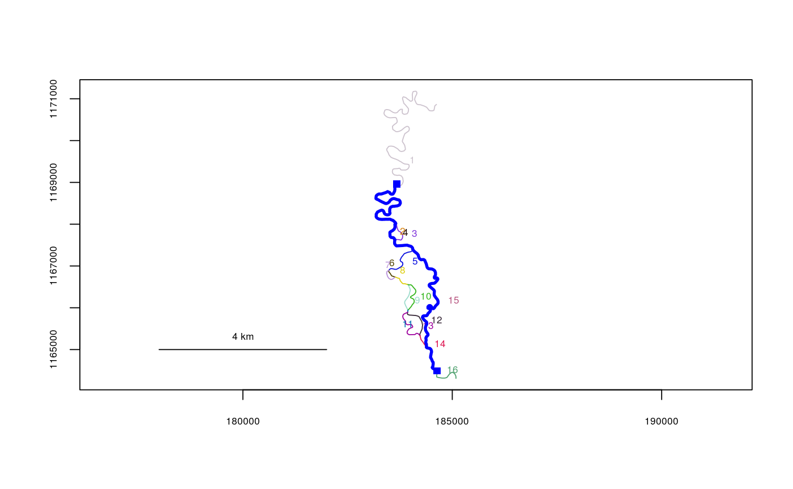
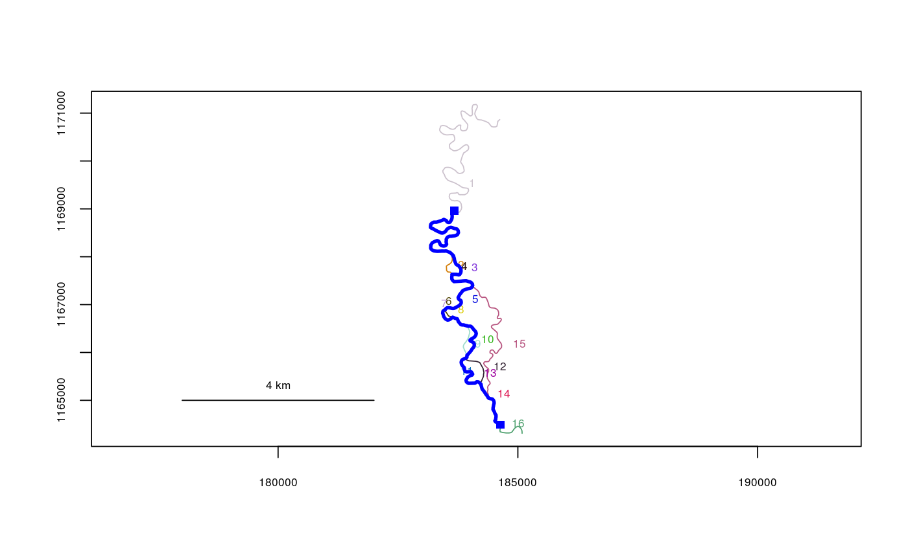

Used to calculate a list of possible river distances, in the event of braiding. Calls routelist to detect a list of routes from one river location to another, and uses riverdistance to calculate the distances along those routes. Different routes are detected by randomly reordering the segment numbers of the input river network object, thus changing the internal hierarchy of segment selection.
riverdistancelist(startseg, endseg, startvert, endvert, rivers, reps = 100)
| startseg | Segment number of the start of the route |
|---|---|
| endseg | Segment number of the end of the route |
| startvert | Vertex number of the start of the route |
| endvert | Vertex number of the end of the route |
| rivers | The river network object to use |
| reps | Deprecated. Was the number of randomized reorderings to try. |
A list with two objects, $routes being a list of detected routes in
ascending order by distance, and $distances being the respective distances
along the routes detected.
Since this function uses randomization, there is no guarantee that the list of routes will be comprehensive. Larger numbers of reps can be tried, but computation can be slow, particularly in the presence of a complex river network. It may be advantageous to use trimriver to create a smaller, more specific river network object to work with.
data(KilleyW) plot(x=KilleyW)Killey.dists <- riverdistancelist(startseg=1, endseg=16, startvert=100, endvert=25, rivers=KilleyW, reps=1000) Killey.dists # 18 routes are detected.#> $routes #> $routes[[1]] #> [1] 1 2 4 15 16 #> #> $routes[[2]] #> [1] 1 2 4 5 6 8 9 11 12 14 16 #> #> $routes[[3]] #> [1] 1 3 4 15 16 #> #> $routes[[4]] #> [1] 1 3 4 5 6 8 9 11 12 14 16 #> #> $routes[[5]] #> [1] 1 2 4 5 7 8 9 11 12 14 16 #> #> $routes[[6]] #> [1] 1 2 4 5 6 8 10 11 12 14 16 #> #> $routes[[7]] #> [1] 1 3 4 5 7 8 9 11 12 14 16 #> #> $routes[[8]] #> [1] 1 3 4 5 6 8 10 11 12 14 16 #> #> $routes[[9]] #> [1] 1 2 4 5 6 8 9 11 13 14 16 #> #> $routes[[10]] #> [1] 1 2 4 5 7 8 10 11 12 14 16 #> #> $routes[[11]] #> [1] 1 3 4 5 6 8 9 11 13 14 16 #> #> $routes[[12]] #> [1] 1 3 4 5 7 8 10 11 12 14 16 #> #> $routes[[13]] #> [1] 1 2 4 5 7 8 9 11 13 14 16 #> #> $routes[[14]] #> [1] 1 2 4 5 6 8 10 11 13 14 16 #> #> $routes[[15]] #> [1] 1 3 4 5 7 8 9 11 13 14 16 #> #> $routes[[16]] #> [1] 1 3 4 5 6 8 10 11 13 14 16 #> #> $routes[[17]] #> [1] 1 2 4 5 7 8 10 11 13 14 16 #> #> $routes[[18]] #> [1] 1 3 4 5 7 8 10 11 13 14 16 #> #> #> $distances #> [1] 8229.720 8254.499 8333.331 8358.110 8416.064 8458.303 8519.674 8561.913 #> [9] 8571.814 8619.867 8675.424 8723.478 8733.378 8775.617 8836.988 8879.228 #> [17] 8937.182 9040.792 #># mapping the shortest route detected... riverdistance(startvert=100, endvert=25, path=Killey.dists$routes[[1]], rivers=KilleyW, map=TRUE)#> [1] 8229.72# mapping the shortest longest detected... riverdistance(startvert=100, endvert=25, path=Killey.dists$routes[[18]], rivers=KilleyW, map=TRUE)#> [1] 9040.792